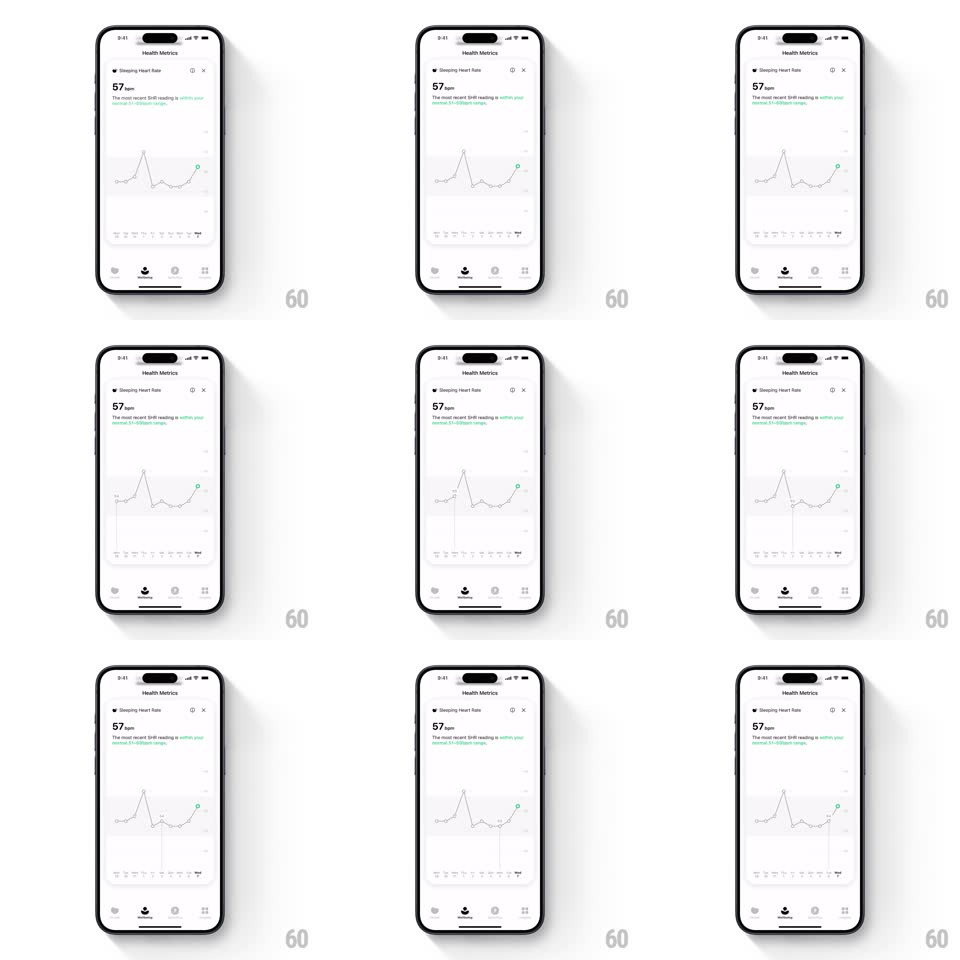

Media
Frame-by-frame

Rebuild this interaction 1:1: Gentler Streak's health-metrics graph - scrub the sleeping-heart-rate line and a vertical guide line rises with a springy tooltip pinned to the touched data point.

Rebuild this interaction 1:1: Gentler Streak's health-metrics graph - scrub the sleeping-heart-rate line and a vertical guide line rises with a springy tooltip pinned to the touched data point. ## Integration Integration: stack-agnostic spec - springs given as stiffness/damping, timed motions as duration + curve; map every value to your framework and animation library of choice. ## Scene From the "Your Metrics Are in Check" summary (green header with the smiling mascot), the Sleeping Heart Rate detail: a large "57 bpm" reading, a status line, and a line graph of nightly readings across two weeks of date labels. Touching the graph reveals a scrubber. ## Motion spec Pattern: scrub-reveal tooltip. - Touch down anywhere on the plot: a thin vertical guide line draws from the x-axis to the graph's top (150ms, ease-out) at the touch x, and the nearest data dot highlights (fills green, ring expanding 0 to 6px, spring ~460/22). - The tooltip pops above the point: value + date, scale 0.7 to 1 with spring ~440/20, anchored so it never clips the screen edge (anchor flips sides near edges, 150ms re-anchor). - Dragging scrubs: the guide line tracks 1:1; the tooltip hops point to point with a quick arc (translate + slight scale dip 0.9, 120ms per hop) and its value crossfades (100ms); each hop ticks a light haptic. - Release: guide line collapses back down (150ms) and the tooltip shrinks away (scale to 0.8 + fade, 150ms). - The graph line itself draws in on screen entry (stroke-dash, 700ms) with dots popping along it as the draw passes. ## Calibration - Snapping is to actual data points only - the guide never rests between dots while scrubbing slowly. - Tooltip stays within the plot's vertical bounds; long-press does not scroll the page. ## Reduced motion Guide and tooltip appear/disappear instantly at the touch point. ## Don't miss - The highlighted dot is green with a white core ring - matching the in-check status color. - Date labels sit below the axis; the tooltip date mirrors the scrubbed point, not the nearest label.